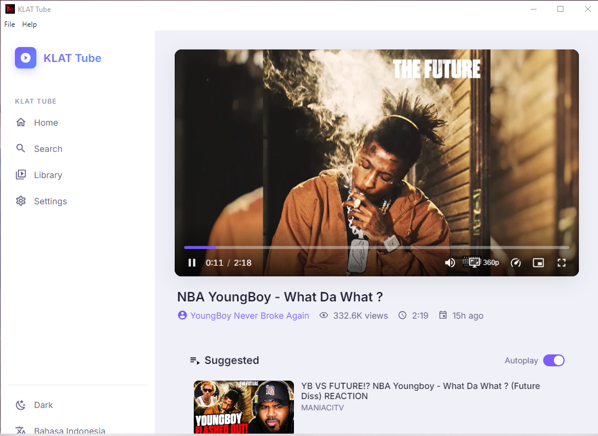

Ad-Free Experience
Blocks all YouTube ads automatically - pre-roll, mid-roll, banner, and overlay ads. Watch uninterrupted.
YouTube client for watching videos without ads. Features: ad-free playback, background play, picture-in-picture, download videos/audio, subscription management without account, SponsorBlock, quality selector, dark mode, no tracking. Free on Windows & Linux.

Blocks all YouTube ads automatically - pre-roll, mid-roll, banner, and overlay ads. Watch uninterrupted.
Play videos with screen off or while using other apps. Perfect for music, podcasts, and long-form content.
Float video window over other apps. Resize, move, and continue watching while multitasking.
Save videos in up to 8K quality or extract audio as MP3/OGG. Batch download playlists and channels.
Automatically skip sponsorships, intros, outros, reminders, and filler. Community-powered segments.
Manage subscriptions, watch later, and history locally. Import/export OPML. Zero tracking, zero Google account needed.
Dark/light themes, accent colors, compact mode, theater mode, custom CSS. Make it yours.
No telemetry, no analytics, no data collection. Proxy requests through Invidious/Piped instances optionally.
Background playback lets you listen with screen off. Download playlists for offline listening.
PiP mode keeps video visible while you work, browse, or chat. Resizable floating window.
Download tutorials, lectures, documentaries for offline viewing. Organize with custom tags.
No Google account, no tracking, no watch history sent to YouTube. Local subscriptions only.
v1.0.0 • 145 MB
v1.0.0 • 138 MB
Yes. Klat Tube uses public Invidious/Piped instances to fetch YouTube content. It's a client, not a scraper. Downloading for personal use falls under fair use in most jurisdictions.
No, and that's by design. Klat Tube stores subscriptions locally. Import/export OPML to migrate from/to other clients or YouTube.
Klat Tube provides ad-free, background play, PiP, and downloads for FREE - features YouTube locks behind Premium.
Yes! Go to Settings → Instance and enter your custom instance URL. Supports both Invidious and Piped APIs.
Windows: auto-update notification. Linux AppImage: use AppImageUpdate or re-download. Flatpak: system update. GitHub Releases always have latest.
Yes! Watch live streams with chat (read-only), DVR controls, and quality selection. Chat replay available for past streams.